Voice room · 390 × 844

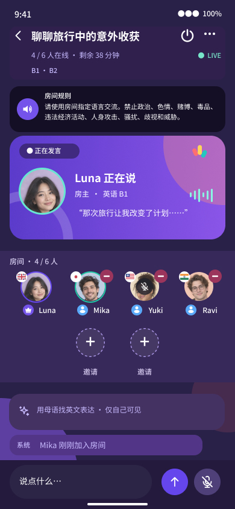

The original Figma images were exported through Desktop Bridge. Runtime screenshots show the final local pages using explicitly identified deterministic API fixtures; they do not establish Android, microphone, or cloud acceptance. Click an image to open the original. See the full results and differences in the acceptance record。
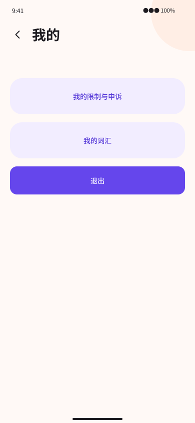
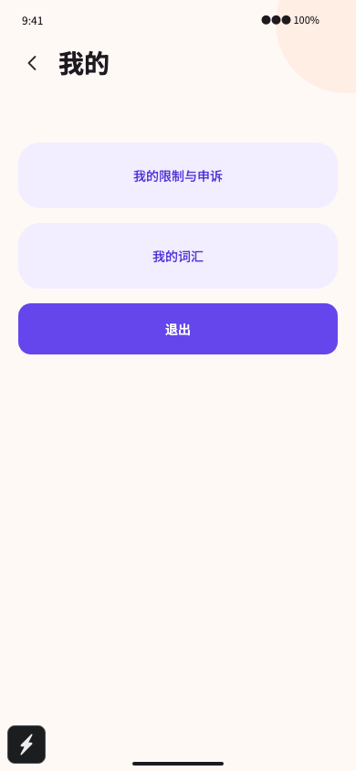
Same-size overlay with opacity adjustment only; neither image has been edited.
The original is preserved. Node 153:1485 adds minimum and maximum proficiency levels. The runtime page still includes the existing discovery-scope and processing-purpose controls; complete visual acceptance of these states remains pending.
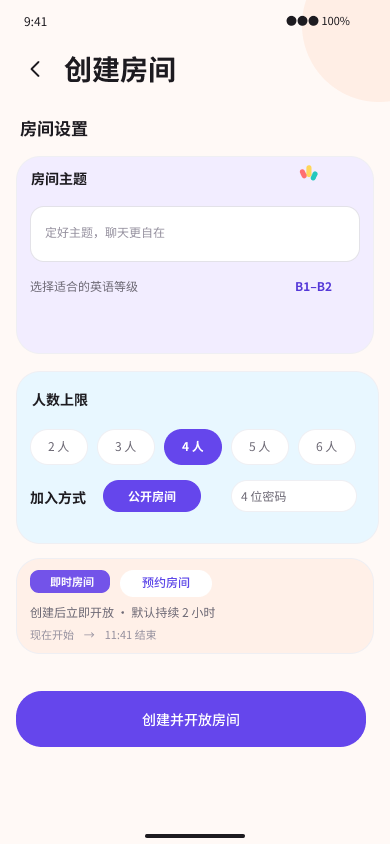
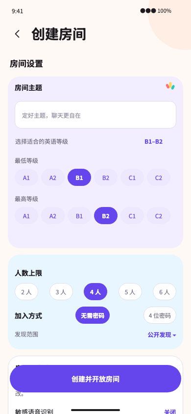
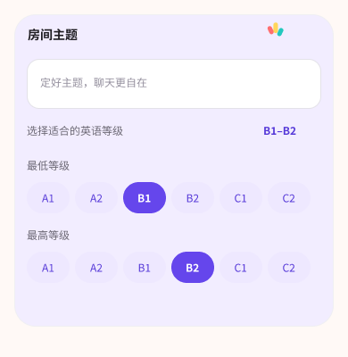
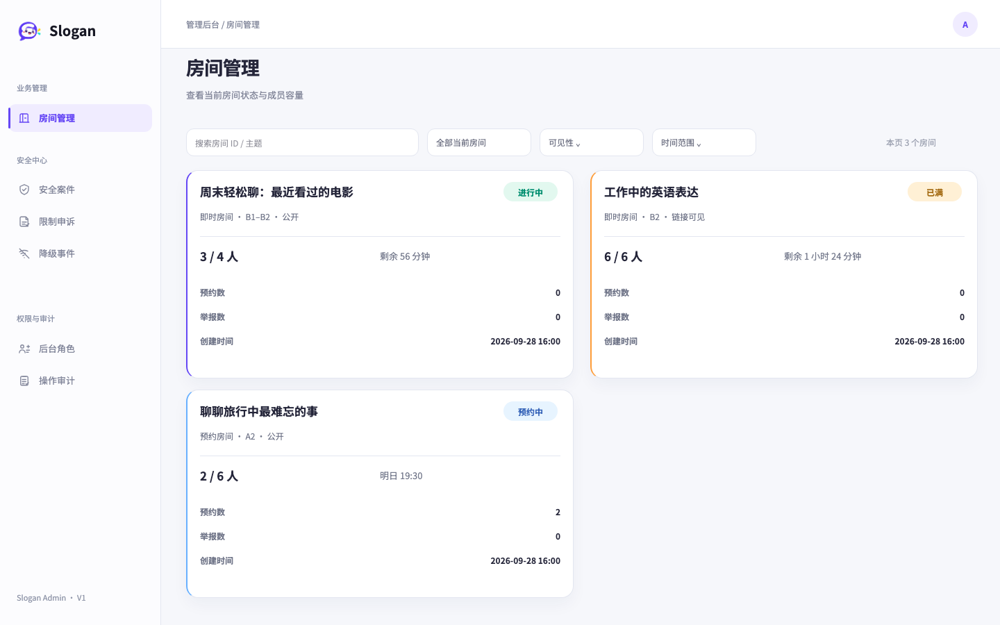

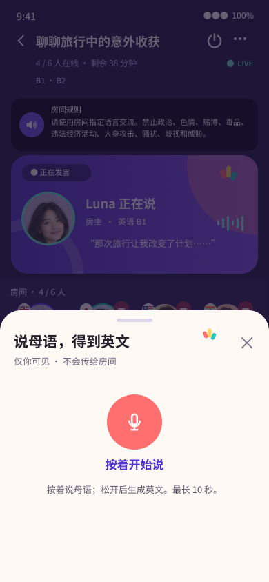
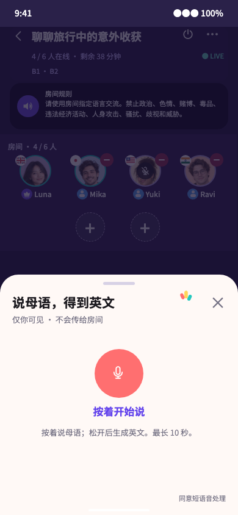
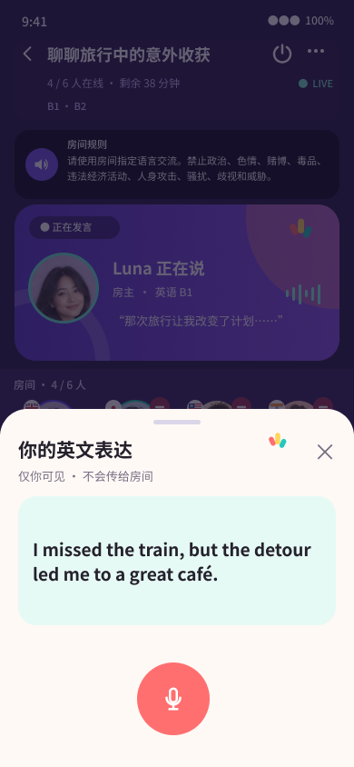
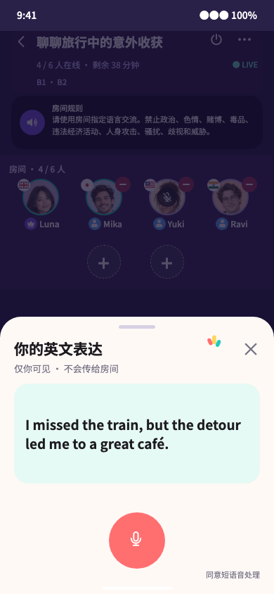
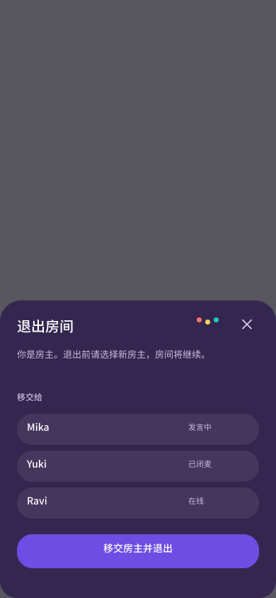
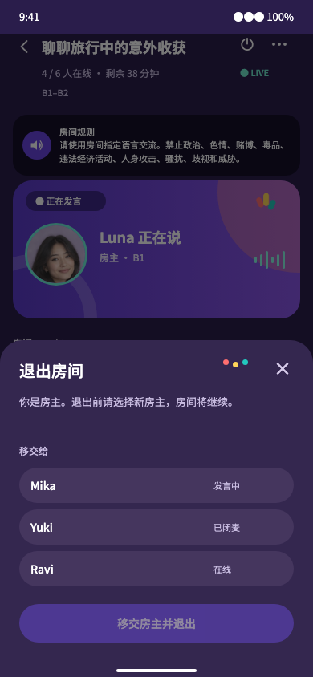
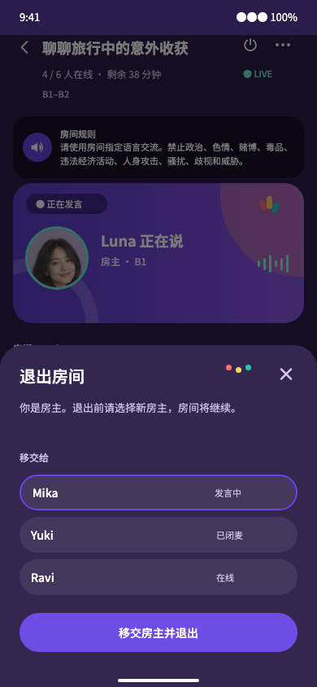
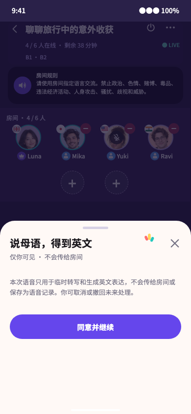
Voice screenshots use the actual VoiceRoomScreen, generated client, and production styles with separate session, media, recording, and HTTP adapters. They do not verify native Expo, LiveKit, or STT. The original stage contains an example quotation without a real transcription contract; no transcription is fabricated here. Host transfer requires an explicit successor selection, and the button is disabled when no successor is selected. Full selection/disabled, first-consent, and withdrawal designs still require acceptance. Desktop Bridge reads and exports succeeded, with no current connection blocker. Real Android screenshots, system-keyboard recordings, two-device privacy isolation, STT/AI results, and cloud queue triggers remain missing; a global 1:1 PASS cannot be reported.